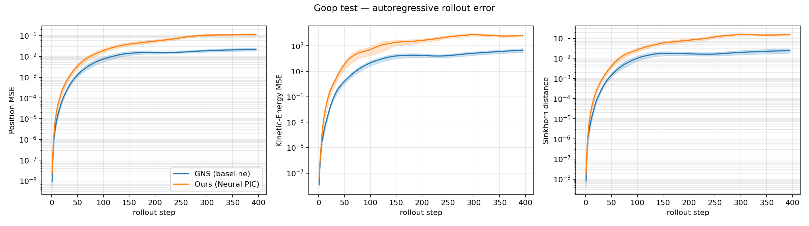
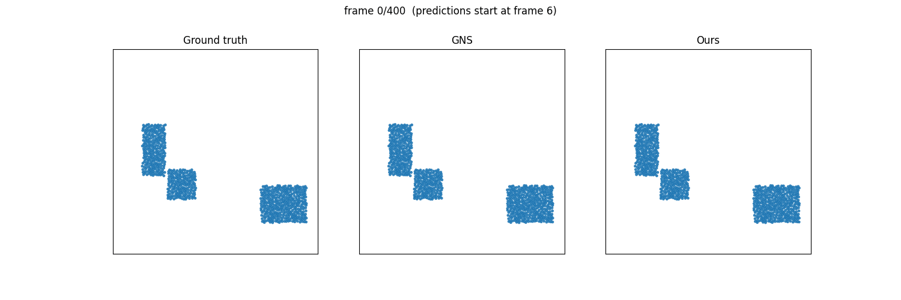

Learned simulators promise orders-of-magnitude speedups over classical numerical solvers for deformable physics, but their long-horizon stability remains a central obstacle. We propose Neural PIC, a hierarchical graph network with a U-Net topology whose pooling, coarse-level processing, and unpooling are designed to mirror the particle-to-grid transfer, grid solve, and grid-to-particle transfer of the classical Particle-in-Cell (PIC) scheme: message passing on a proximity graph resolves local kinematics, Self-Attention Graph (SAG) pooling coarsens the graph toward a low-resolution proxy, a Transformer resolves global dynamics at the coarsest level, and skip-connected unpooling returns the resolved signal to the full particle set. The design hypothesis is that the particle→grid information bottleneck that stabilizes classical PIC will transfer to the neural setting, simultaneously improving long-horizon accuracy (H1) and reducing the cost of global attention (H2). We test both hypotheses against Graph Network-based Simulators (GNS) on the Goop deformable benchmark over full 395-step autoregressive rollouts, measuring position MSE, kinetic-energy error, Sinkhorn distance, and per-pass efficiency. Both hypotheses are rejected. GNS is more accurate on every metric—by roughly 4.5× in mean position MSE and up to 19× in mean kinetic-energy error—and our model wins on only 2 of 30 test trajectories, with the gap widening over the rollout (the median per-trajectory error ratio grows from 4.58 overall to 6.87 over the final 40 steps). On efficiency, our model is 30% smaller in parameters yet ~64% slower per forward pass. We report this as a negative result and discuss what it implies about transcribing the PIC stability mechanism into a learned, attention-bottlenecked architecture.

